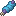

GIMNASIO DE ESFUERZO
Entrenamiento EV
Los puntos de esfuerzo (EVs) son el entrenamiento extra que hace que tu Pokémon sea más fuerte que uno salvaje del mismo nivel. Aquí tienes cómo ganarlos rápido en Diosesmon, qué Pokémon combatir y cuánto te falta.
- Piezas recias +8
 Vitaminas +10
Vitaminas +10 Combates 3v3
Combates 3v3


¿Qué son los EVs?
Cada vez que tu Pokémon derrota a otro, gana puntos de esfuerzo en una o varias estadísticas según la especie derrotada. Al nivel 100, cada 4 EVs suman 1 punto a esa estadística. No confundir con los IVs, que son genéticos.
Cómo se consiguen en Cobblemon
Todas las formas de sumar (o quitar) EVs que hay en el servidor, con su receta. Cada objeto tiene una versión para cada estadística.
En Cobblemon no existen el Brazal Firme ni el Pokérus, así que nada duplica los EVs: la clave es la pieza recia y combatir contra muchos rivales a la vez.
MÉTODO DIOSESMON
Combates 3v3 con piezas recias
La forma más rápida de entrenar en el servidor: tres Pokémon tuyos contra tres salvajes a la vez, cada uno con su pieza recia.
- Equipa las piezas reciasDale a cada Pokémon la pieza de la stat que quieres subir. Suma +8 en esa stat por cada rival derrotado, dé lo que dé el rival.

Ve a por el Pokémon correctoBusca una zona con muchos spawns de los recomendados. Un Poké Snack o un cebo con la baya EV de esa stat atrae más Pokémon que dan esos EVs.- Combate 3v3Lanza a tus tres Pokémon contra el grupo de salvajes. Cada rival que cae da sus EVs a tus Pokémon que combatieron contra él: tres rivales por combate en vez de uno.
- Repite y mira tus EVsComprueba los EVs en el resumen del Pokémon y para al llegar a 252. Si te pasas, quita con las bayas reductoras.
Calculadora de entrenamiento
Pokémon recomendados para entrenar
Elegidos por los EVs que dan y por su spawn en el servidor: comunes y fáciles de encontrar. El tercero de cada stat aparece a nivel bajo, para empezar pronto.
¿Y los IVs? La Tienda de IVs
Los IVs (0 a 31 en cada stat) vienen de nacimiento y no se entrenan combatiendo. En Diosesmon los caramelos de IV están desactivados: para mejorarlos tienes la crianza y el NPC Tienda de IVs, que sube o baja cualquier IV a cambio de Pokédólares.
Precio por punto
Cada punto se cobra según el valor en el que queda el IV. Bajar también cuesta (por ejemplo, Velocidad a 0 para Espacio Raro).
Consejo: subir un IV de 0 a 31 cuesta $320.000 (los 6: $1.920.000). Sale mucho más barato criar y usar la tienda solo para rematar un IV o bajar uno a 0.
EVs de todos los Pokémon
Los EVs que da cada Pokémon del servidor (generaciones 1 a 4) al derrotarlo, y dónde aparece. Filtra por la stat que quieres entrenar.
Ningún Pokémon coincide con el filtro.